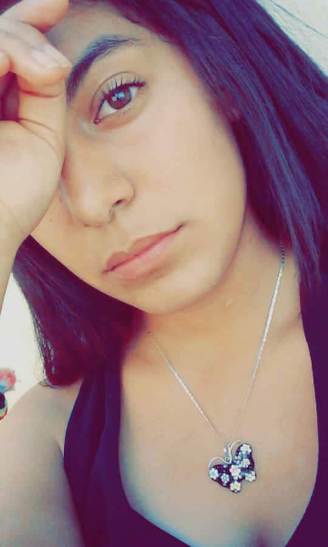

Pero mira a esa hermosura de la derecha JAJAJA Esta es la carta adaptada a la era tecnologica, pues simplemente hago esto en una pequeña parte por aburrimiento, y la otra por que, en mi cuarto en una lluvia de ideas pense en hacer una página web para ti jajaja Tratando de escribir unas lindas palabras para ti, la mujer que sus ojos son dos perfectos universos llenos de vida, esos hermosos ojos que son como los de medusa, al momento de verlos quedas petrificado por no poder creer que exista tanta belleza en una persona.
No solo tus ojos, tambien tu sonrisa, tu sonrisa es simplemente bella, cuando esa linea curveada aparece en tu cara magicamente y de la nada yo tambien la tengo.
Me encanta cuando se te va el avión y te quedas pensando, es la misma forma en la que yo me quedo al verte, no podia dejar de verte cuando estabas frente a mi, y es lógico, por que, ¿Cómo crees que vas a ignorar a semejante belleza?
También, el sonido de tu voz, cada palabra que dices es una melodia agradable de escuchar, tu sentido del humor y tu carisma hacen que el quererte sea cada vez más, me encanta cuando miras hacia otro lado, es simplemente la mejor vista que puedes obtener de este mundo, tu mano rozndo la mia mientras me alejo de la persona que me gusta (Tu) hacen que sienta la misma presión en mi pecho, semejante a la que senti cuando te conoci, jamas olvidare ese dia.
Esto seria todo, espero te haya gustado, te quiero mucho, me gustas.
No se si alguna vez vuelvas a entrar a esta página, espero que si, demonios, eras la mujer que alegraba mis dias, y creo que bastaron menos de 31 días para que te dieras cuenta que no querias a una mierda de persona como yo, solo tenia mi amor incodicionalmente para darte, hubiera tratado de cambiar mis actividades por ti, para que estuvieras conmigo, entre lagrimas te digo que fuiste la mujer que más sonrisas me a provocado en poco tiempo, te quiero... (Miércoles 01 de Agosto de 2018, 11:43 p.m)